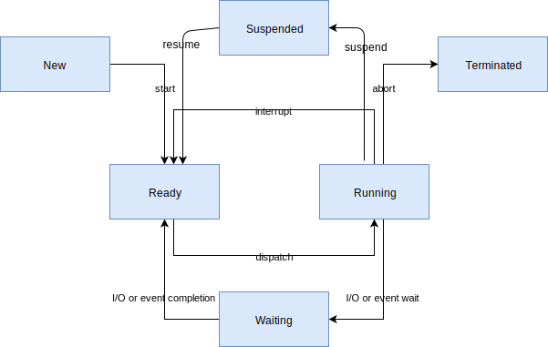

Threads
Lifecycle
Thread Creation
Thread phải được tạo trước khi sử dụng. Kernel sẽ khởi tạo khối điều khiển cho Thread (Phần này gồm có Thread ID, Thread state, Thread Priority...) phần này là mỏ đầu cho stack của Thread. Và phần còn lại của stack thường không được khởi tạo.
Thread Termination
Thread khi đã bắt đầu thì sẽ thực thi vĩnh viễn. Tuy nhiên, Thread có thể kết thúc bằng cách quay về từ hàm điểm vào của nó. Điều này gọi là Terminate.
Một Thread kết thúc có nhiệm vụ giải phóng toàn bộ tài nguyên có trong stack. Bởi vì kernel không thể lấy lại chúng một cách tự động.
Trong một số trường hợp Thread có thể sleep cho đến khi một Thread khác
terminate. Điều này có thể thực hiện bằng API k_thread_join(). Điều này sẽ
block Thread gọi cho đến khi hết thời gian timeout, Thread target thoát
hoặc Thread target bị hủy bỏ (do gọi API k_thread_abort()
hoặc có lỗi xảy ra).
Thread Aborting
Thread có thể bị kernel tự động hủy bỏ (nếu luồng đó gây ra lỗi).
Thread có thể bị hủy bỏ bởi một Thread khác (hoặc chính nó) bằng cách gọi
k_thread_abort().
Giống với Thread Termination kernel cũng không thể thu hồi lại các tài nguyên mà Thread đó sử dụng.
Thread Suspension
Thread có thể bị chẳn không cho thực thi trong một thời gian vô hạn nếu nó
bị Suspension. k_thread_suspend() có thể sử dụng để suspend một Thread.
Sau khi bị Suspend thì một Thread không còn trong Scheduling. Để
Thread được schedule phải gọi hàm k_thread_resume().
Ghi chú
Thread có thể bị chẳn trong một khoảng thời gian bằng cách sử dụng hàm
k_sleep() và có các biến thể khác là k_msleep() và k_usleep()
Thread State
Thread không có yếu tố nào chặn thực thi được coi là trạng thái ready, và đủ điều kiện gọi là current thread.
Thread có một hoặc nhiều yếu tố nào chặn quá trình thực thi được gọi là trạng thái unready và không đủ điều kiện gọi là current thread.
Các yếu tố làm cho Thread rơi vào trạng thái unready.
Thread chưa start.
Thread đang chờ kernel thưc hiện xong một hoạt động.
Thread đang chờ cho hết thời gian chờ.
Thread bị Supspend (Thread Suspension).
Thread bị Terminated (Thread Termination) hoặc Aborted (Thread Aborting).
Ghi chú
Ready là một Thread State còn Running là thread được lập lịch
và chỉ áp dụng thread đã vào trạng thái Ready.
Thread Stack objects
Tất cả các Thread đều yêu cầu một stack buffer để CPU đẩy ngữ cảnh (context) vào. Tùy thuộc vào config của người dùng sẽ có những ràng buột nhất định mà thread đó phải tuân theo:
Có thể cần thêm bộ nhớ cho các phần quản lý bộ nhớ.
Nếu tính nắng phát hiện stack-overflow được enable, một vùng quản lý bộ nhớ bảo vệ nhỏ được đặt trước stack buffer để phát hiện overflow.
Nếu không gian người dùng được bật, thì có một vùng như là stack của kernel để xử lý các system calls.
Nếu không gian nười dùng được bật, thread stack phải có kích thước và căn chỉnh phù hợp sao cho vùng bảo vể có lập trình một cách chính xác.
Có sự ràng buộc về sự căn chỉnh do đó portable code không thể đơn giản chuyển bộ đệm ký
tự tùy ý tới k_theard_create(). Có các macro đặc biệt để khởi tạo các ngăn xếp, có
tiền tố là K_KERNEL_STACK và K_THREAD_STACK.
Kernel-only Stacks
Nếu thread được biết rằng không bao giờ chạy ở user mode, hoặc stack đó đó được chạy
với các ngữ cảnh đặc biệt như là handling interrupts, thì tốt nhất xác định stack
size sử dụng macro K_KERNEL_STACK.
Những stack này cũng tiết kiệm bộ nhớ do không có phân chia thêm phần quản lý và bảo vệ bộ nhớ.
Thread Stacks
Nếu stack được biết là cần để lưu các thread của người dùng không thể xác định thì
hãy định nghĩa stack với macro K_THREAD_STACK. Thread Stack ở định nghĩa tốn
nhiều bộ nhớ hơn.
Nếu CONFIG_USERSPACE không được enable thì macro K_THREAD_STACK có tác dụng
giống với macro K_KERNEL_STACK.
Thread Priorities
Priority của Thread là số nguyên có thể là số không âm hoặc số âm. Số càng thấp thì mức độ ưu tiên cao hơn.
Example:
Thread A priority 4
Thread B priority 7
Thread C prority -2
=> Mức ưu tiên của các thread: C > A > B
Scheduler phần biệt thành hai loại thread dựa trên mức độ ưu tiên:
cooperative thread có giá trị ưu tiên âm. Khi trở thành current thread, cooperative thread sẽ luôn là current thread cho đến khi nó chuyển sang trạng thái unready.
preemptible thread có giá trị ưu tiên không âm. Khi trở thành current thread, preemptible thread có thể bị thay thế bất kì lúc bởi cooperative thread hoặc preemptible thread có độ ưu tiên cao hơn hoặc bằng vào trạng thái ready.
Có thể thay đổi mức độ ưu tiên của một thread sau khi nó đã bắt đầu chạy.